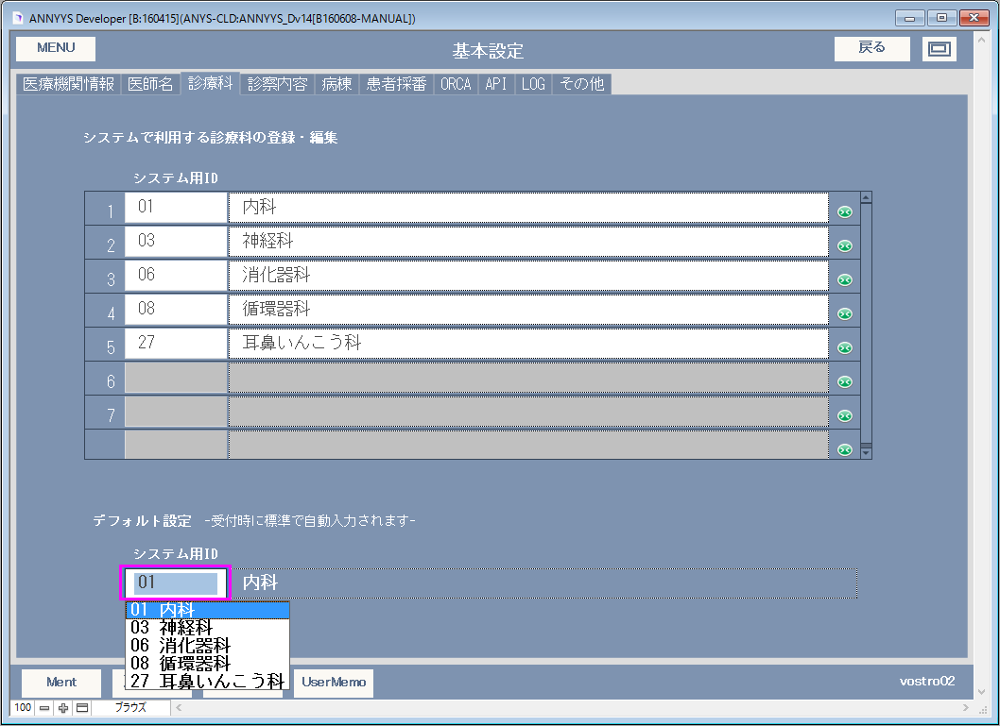
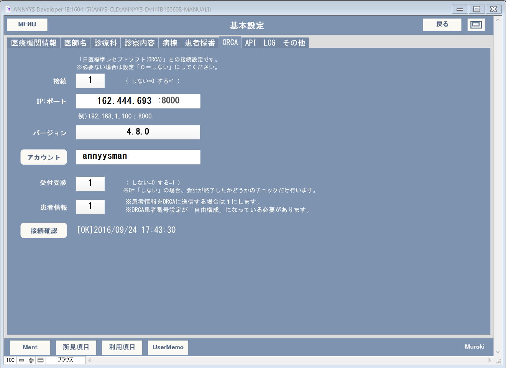
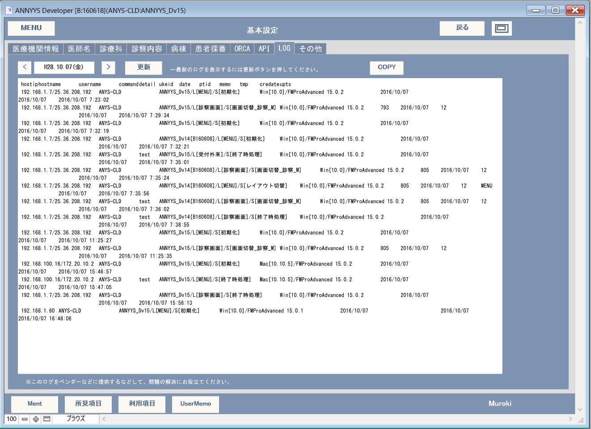
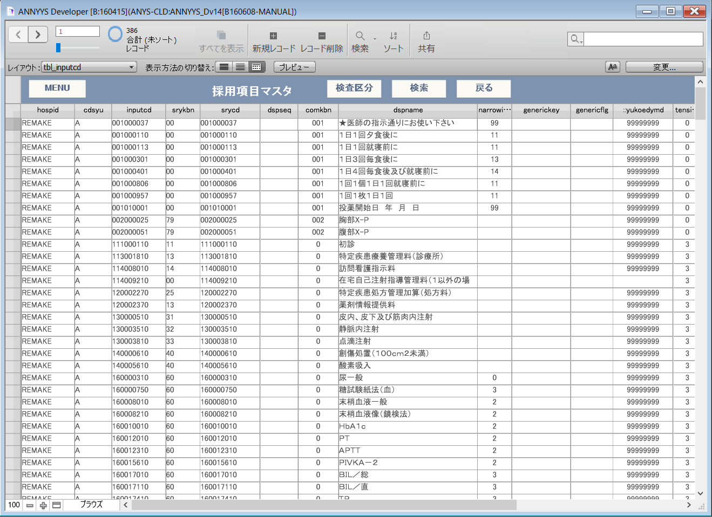

マニュアルの表現に関して
本マニュアルでは大文字英語の記号表現があります。この意味以下のようになりますので、ご理解の上お読みいただけますようお願い申し上げます。
| 記号 | 読み方 | 説明 |
|---|---|---|
| L(エル) | レイアウト | 表示されている画面の名称 |
| B(ビー) | ボタン | 画面上のボタン |
| F(エフ) | フィールド | 画面上の入力スペースのこと |
| T(タブ) | タブ | 画面上のタブスペースのタイトル |
| S(エス) | スクリプト | スクリプトメニューにあるスクリプト名 |
例１）L[メインメニュー] B[外来受付]
メインメニュー画面の、外来受付ボタン（を押す）となります。
例２）L[診療記録] T[病名] F[病名]
診療記録画面の、病名タブの、病名入力スペースとなります。
基本設定は印刷物に主る出力される項目やソリューションの動作を決めるものがありますので、最初の段階である程度入力を済ませておいてください。
ANNYYS_Dの設定情報には共有情報と固有情報の2種類があります。文字の通りですが共有情報はその内容が同じFileMakerServerを介しているネットワーク上の全てのANNYYS_Dに反映します。また固有情報は他のANNYYS_Dの設定に影響されることなく完全に同一のANNYYS_D上でのみ反映されます。いくつかのANNYYS_Dによる運営が必要な場合この区別が重要になります。
※医療機関情報はサーバー側のDB_ANNYYS/anys_prefのレコードに登録されいる共有情報で、DATE >= 更新日 の関係で認識します。そしてANNYYS_Dは開いたときに必ず日付けを確認し本日の日付けをDATEというフィールドに登録しています。この関係は医療法人化するなどして病院名が変わった場合に過去の情報はそのまま維持しながら新しい情報を登録する際に有効です。メインメニュ B基本設定 T療機関情報では入力時による事故を減らすように配慮したインタフェースですがDB_ANNYYS/anys_prefを直接参照し行を追加する事によって日付けによる医療機関情報の変更にも対応できます。
システム用ID:1から始まる5ケタの数字で医師名を登録します。(共有情報)
デフォルト設定（固有情報）：このANNYYS_Dで[来院受付]で受付処理をしたときに自動で登録される医師名を指定できます。
診療科にはあらかじめ以下の３４の診療科が登録されています。
| 01 内科 02 精神科 03 神経科 04 神経内科 05 呼吸器科 06 消化器科 07 胃腸科 08 循環器科 09 小児科 10 外科 11 整形外科 12 形成外科 |
13 美容外科 14 脳神経外科 15 呼吸器外科 16 心臓血管外科 17 小児外科 18 皮膚ひ尿器科 19 皮膚科 20 ひ尿器科 21 性病科 22 こう門科 23 産婦人科 24 産科 |
25 婦人科 26 眼科 27 耳鼻いんこう科 28 気管食道科 30 放射線科 31 麻酔科 33 心療内科 34 アレルギー科 35 リウマチ科 36 リハ科 |
これら診療科に設定されている2ケタの番号は決められたものがあり既に登録されていますので決して変更はしないでくさい。ただ、全部の診療科があっても利用する診療科はあって数種類だと思います。そこで必要のない診療科はリストの右にある緑色のボタンでポップアップ対象から省く事ができるようにしています。
グレーアウトしたリストは再度右にある緑色のボタンを押せば復活します。
デフォルト設定（固有情報）：このANNYYS_Dで[来院受付]で受付処理をしたときに自動で登録される診療科を指定できます。

来院受付時の受付情報に対し来院目的を登録す再に利用する項目です。
| 99 該当なし 01 診察 02 薬のみ 03 注射のみ 04 検査のみ 05 手術 06 健康診断 07 予防注射 |
あらかじめこれだけの内容が登録されていますが、必要に応じポータル内のデータを追加できます。
デフォルト設定（固有情報）：このANNYYS_Dで[来院受付]で受付処理をしたときに自動で登録される診療科を指定できます。
病棟に関する登録項目です。必要に応じて内容を編集できます。
デフォルト設定（固有情報）：このANNYYS_Dで[来院受付]で受付処理をしたときに自動で登録される診療科を指定できます。
※2016年9月時点では入院に関するサポートはまだ行っていません。

日レセと連携する際に設定す情報です。
連携するにはAnnyysPluginと連携用プログラム（WEBフォルダ以下）が正しい場所に配置されている必要があります。
「ANNYYS_D版の動作環境」プラグイン（AnnyysPlugin）の登録・インストール
「ANNYYS_D版の動作環境」ANNYYS_D版の配置場所
をよく読んで、ANNYYS_Dフォルダ以下にあるWEBフォルダを正しい場所に配置してください。
設定方法

各種情報と画面遷移方法が指定できます。
ANNYYS：ANNYYS_D版のバージョン情報です。
API_PATH：連携ツールなどの配置やバックアップデータを作成する場所などローカルのＰＣ上でANNYYS_D特有の作業場所となるパスを表示しています。（変更はできません）
Plugin：プラグインのバージョンを表示しています。プラグインがインストールされているかどうかは「編集」>「環境設定」＞「プラグイン」で確認できます。
WVCheck：Webビューワで利用されているブラウザの種類とANNYYS_Dで利用しているライブラリのバージョンを確認できます。


診療画面において診療行為や処方する薬剤など利用している項目が登録されている固有情報データです。これらは共有情報であるDB_ANNYYS/tbl_tensuから抜粋されたもので利用者（医師）や診療科によって個別に登録できるようになっています。